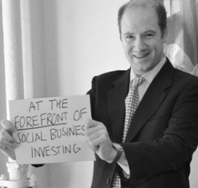

Educated in Physics and Engineering, John has held senior roles in BAE Systems, where he was responsible for airborne Radar products, and Pentland Systems, where he held Board-level posts as Marketing Director and Technical Director. At Pentland Systems, John helped secure venture financing and the eventual sale of the business to a major industry partner. In addition to developing the company's prime sales channel in South-East Asia, John also managed the engineering team, leading the core R&D efforts to develop three new, groundbreaking signal acquisition products. Subsequently, John worked in venture capital and private equity for Chart Group in New York City, contributing to venture & LBO deals worth over $200m. John specialized in financial analysis and deal structuring of potential investments and contributed his entrepreneurial experience to the development of portfolio companies. Since joining Echoing Green in 2009 as Director of Finance, John has significantly increased his exposure to the social enterprise sector and sought to utilize his skills and experience in delivering increased impact through investment in socially-oriented, sustainable businesses. John also consults as Finance Director for Hot Bread Kitchen, a revolutionary NYC-based social enterprise creating better lives for low-income women and their families. John graduated from the EMBA-Global program at Columbia and London Business Schools in 2008 and received the Distinguished Service Award for his service to the schools. John is also an Adjunct Professor at Columbia University's School of International and Public Affairs specializing in investment in social enterprises.